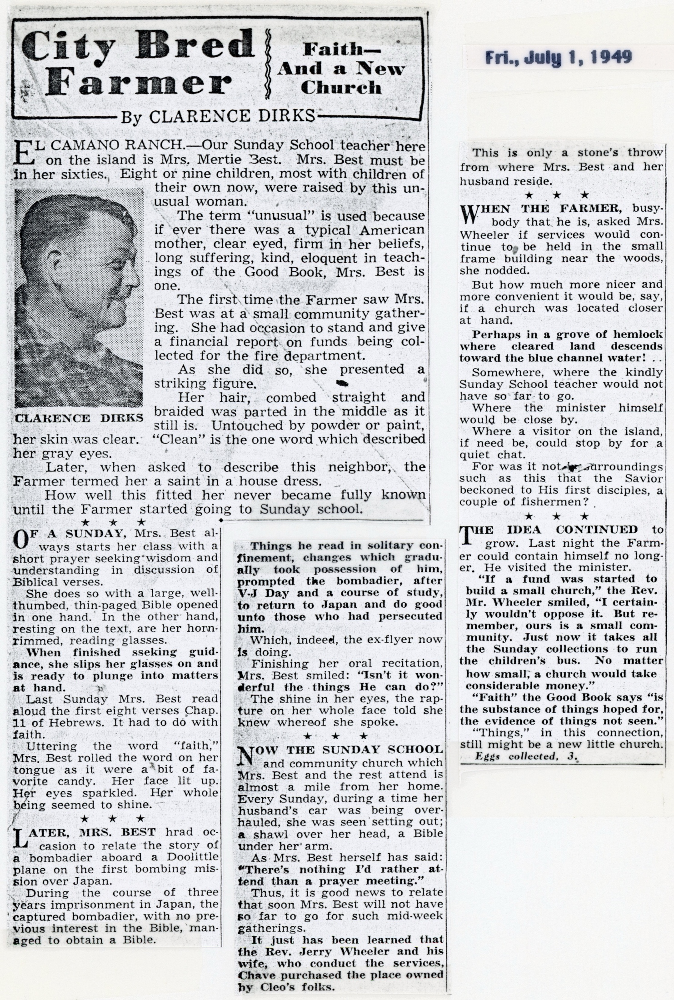

Some Special City Bred Farmer Columns
I've collected together a few special City Bred Farmer columns in what follows. Unlike the typical column, most of these do not deal with the everyday trials and tribulations of a novice farmer dealing with cattle, bees, pigs, holy bushes, fruit trees and various pieces of farm machinery. Nor do they describe excursions to the annual Washington fairs where the Farmer, son Marty and Grandpa George were both observers and exhibitors. The first four columns are particular favorites and show clearly my dad's self-deprecating humor: boxing with Marty, sweeping the barn with little Michael, playing football with a pig and lastly trying to deliver holy in Seattle.
The next four columns deal with Marty and football: his first high school game, a follow-up response to that column, Marty playing on the varsity squad two years later and then finally Marty earning a letter.
Dad was a star athlete at Palo Alto HS in California and at the University of Washington followed by 13 years as a Seattle PIU sportswriter. Occasionally there would be some reference to this in the City Bred Farmer. I've included here four such columns. The first relates to his selection as the finest athlete to ever attend his high school (and a related article from the Palo Alto Times), the next two chronicle the visit to Camano of a UW Husky teammate, Abe Wilson, and the last describes an incident that occurred before the 1926 Rose Bowl.
Dad traveled to San Francisco about once a year to cover the Grand National Exposition at San Francisco's Cow Palace or to show or sell cattle at that venue. Such a trip always included time to visit his mother and other relatives. The next three columns describe two such visits. These are followed by two columns that profile his Grandma Gibson and her son, Uncle Les Gibson.
Fishing for salmon was one of my dad's favorite activities; similarly angling for cod or other bottom fish and raking for smelt. In fact, one of his biggest magazine sales was an article on salmon fishing for the Saturday Evening Post. I've included four City Bred Farmer columns on this topic.
One of the lasting contributions that the City Bred Farmer columns made to life on Camano Island was the creation of the Camano Chapel. Largely financed by contributions from the column's readers, the next 15 Dirks' written articles trace its evolution from an idea, to a concrete reality. Since the building of a modest structure, Camano Chapel has been transformed into a mega church.
Mike Dirks aka Little Michael
The Farmer Can Laugh at Himself
| August 2, 1949 | Boxing With Son Jars Dirks |
| May 2, 1949 | Little Mike and His Animal Crackers |
| July 7, 1948 | Farmer, Petunia in a Football Match |
| December 15, 1947 | Jalopy Blocks City Streets, And Did Farmer's Face Burn |
Marty Plays Football
| October 15, 1948 | Farmer Roots at Marty's First Football Game |
| October 26, 1948 | Football Pleasure to Marysville Boy |
| October 25, 1950 | Pop Sees Marty Get Into Game |
| November 30, 1950 | A Football Coach Gives Out Letters |


November 30, 1950
Farmer Dirks' Athletic Career
| April 12, 1950 | Dirks is Chosen Top Athlete |
| August 4, 1949 | Athletic Friendship Renewed |
| August 8, 1949 | Michael Wants Vacation Extended |
| December 29, 1950 | Memories of Another Rose Bowl Game |


Trips to California and Special Memories
| June 6, 1949 | Farmer and His Mother |
| June 7, 1949 | Down Memory Lane |
| December 13, 1950 | All Children Attend the Family Reunion |
| December 7, 1950 | Fine Memories of Grandma Gibson |
| December 8, 1954 | He Loved Horses |


Fishing With Friends and Family
| July 6, 1949 | Fishing Aa Fox Spit |
| August 11, 1949 | Patience Needed to Get Smelt |
| May 9, 1950 | The Farmer Goes Out For Salmon |
| August 27, 1952 | Patience Rewarded |


August 27, 1952

The City Bred Farmer Builds a Church
| April 5, 1948 | Island Preacher Handy as Auto Mechanic, Bus Driver |
| June 10, 1949 | Michael Shows the Way to Church For Farmer |
| July 1, 1949 | Faith—And a New Church |
| October 13, 1949 | Fund For Church Still Growing |
| October 21, 1949 | Farmer's Holiday |
| December 6, 1949 | Fund For Church Grows Steadily |
| February 17, 1950 | Good Neighbors At Work |
| March 13, 1950 | No Title |
| April 20, 1950 | Ground Broken For New Church |
| May 1, 1950 | Church Clearing Makes Progress |
| May 3, 1950 | Bricks For New Island Chapel |
| June 12, 1950 | Young Preacher Invents a Plow |
| August 4, 1950 | Farmer Plays 1st and 2nd Shovel |
| August 7, 1950 | 'Twas a Tough Job, But Well Done! |
| June 6, 1951 | Church in Wildwood Nearing Completion |





April 20, 1950
May 1, 1950

June 12, 1950